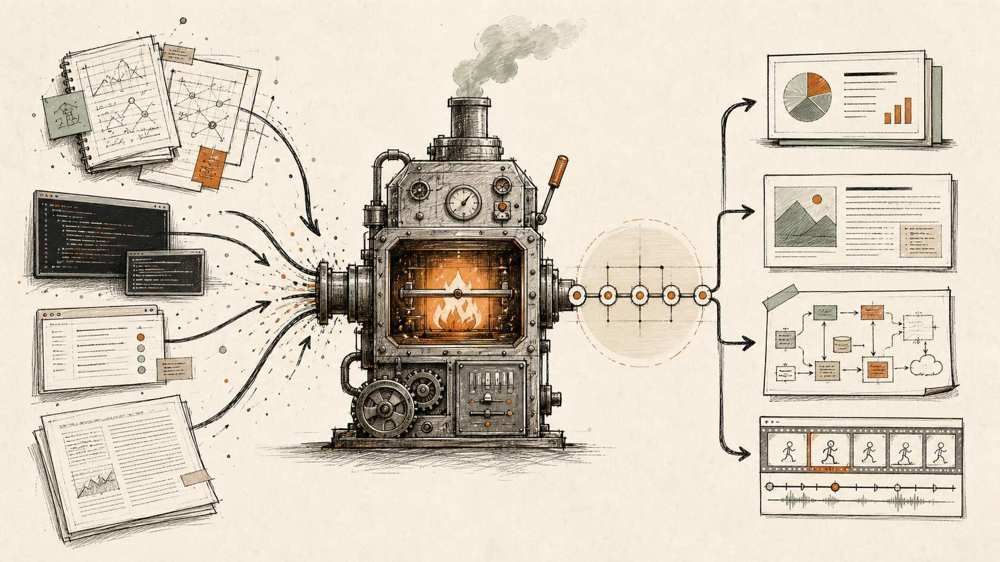

00 / A visual introduction
Distill noise.
Ship logic.
Synapse turns raw technical material into traceable, publishable artifacts.
SYNAPSE v201 / The problem
Why does AI output still feel unfinished?

Generation is cheap.
Judgment is scarce.
Judgment is scarce.
Synapse treats structure, evidence, visuals, and validation as one pipeline.
02 / The system
Three Skills, one argument spine.
03 / The pipeline
What happens after you drop in a paper?
INPUTSourcesURLs · PDFs · notes · logs
→
FORGEEvidenceextract · verify · synthesize
→
COREDSLone argument spine
→
OUTPUTPublishslides · article · diagram · motion
The format changes. The reasoning does not.
04 / Example · OPD
Can one paper become a complete teaching package?
05 / Examples · breadth
Does the same system survive different topics?
06 / Quality gate
What makes the output reproducible?
REFRESHRebuild mirrored examples deterministically.
VERIFYReject prompt placeholders and missing images.
STRUCTURECheck cover, agenda, mechanism, and references.
node scripts/refresh-skill-examples.js
node scripts/validate-slide-visuals.js
node scripts/validate-slide-visuals.js
07 / Install
How do you put Synapse into Codex?
Human · choose Skills
npx --yes skills add https://github.com/yangjingo/Synapse \ --agent codex --global --full-depth --copy
Agent · install all six
npx --yes skills add https://github.com/yangjingo/Synapse \ --agent codex --global --full-depth --copy \ --skill "*" --yes
Use --full-depth, then restart Codex.
08 / Start here
What should you ask Synapse first?
Use $synapse to turn these papers and notes into a Why.J-style slide deck and engineering article. Keep every claim traceable and embed finished visuals.
The deliverable is not more content. It is a clearer argument.